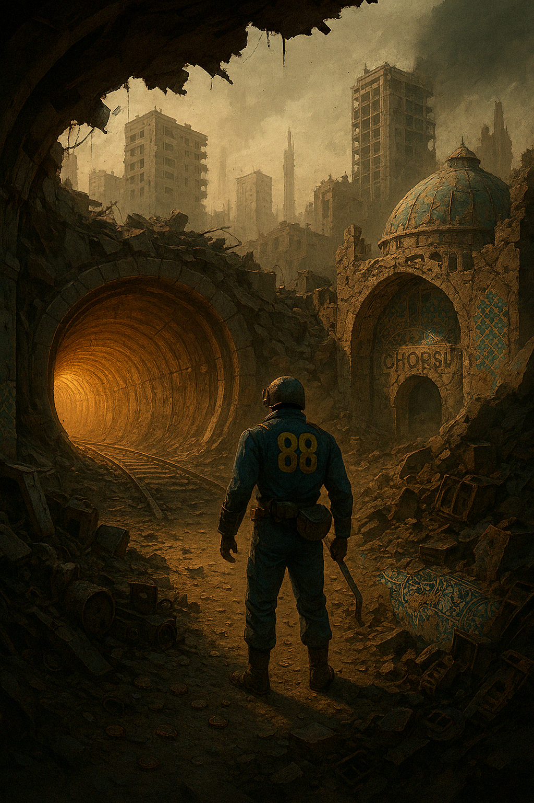
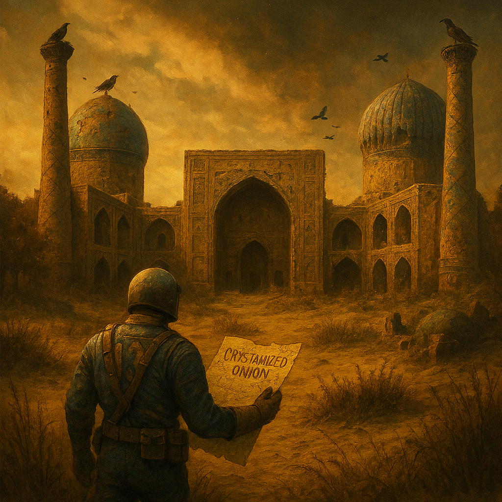
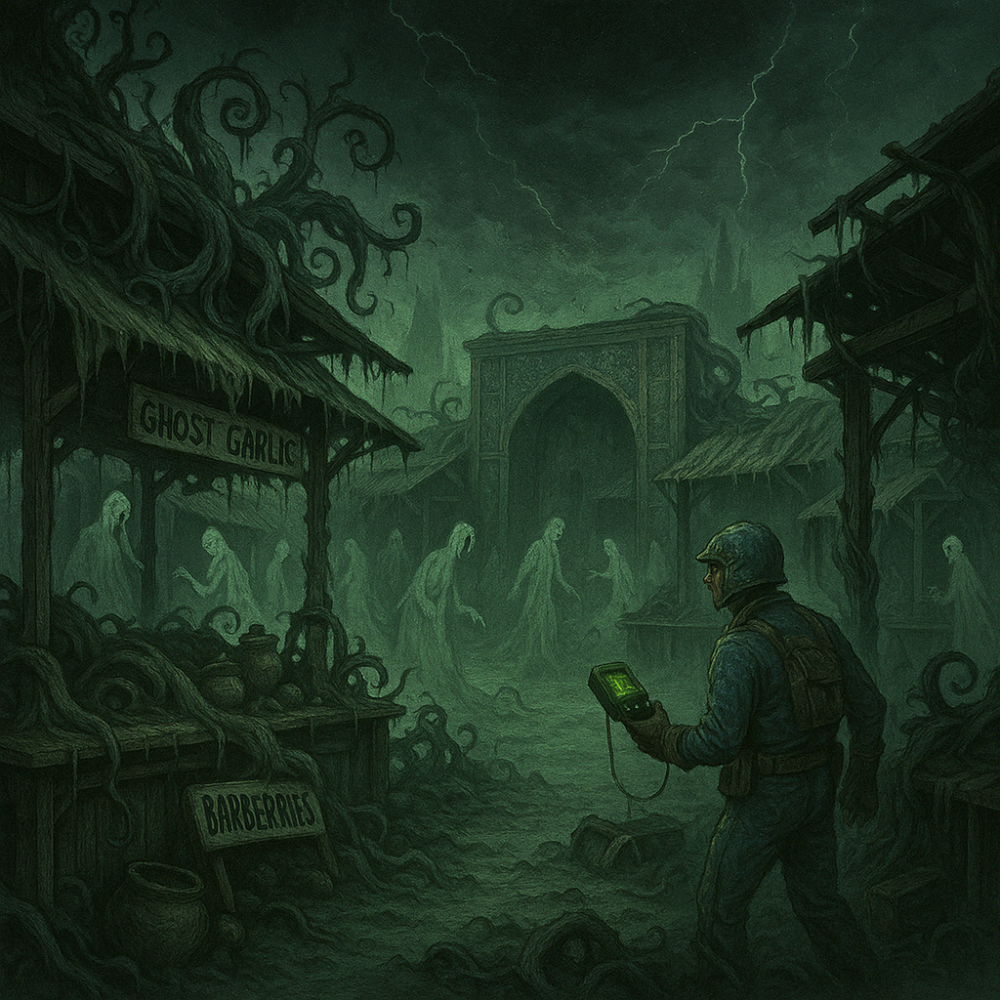
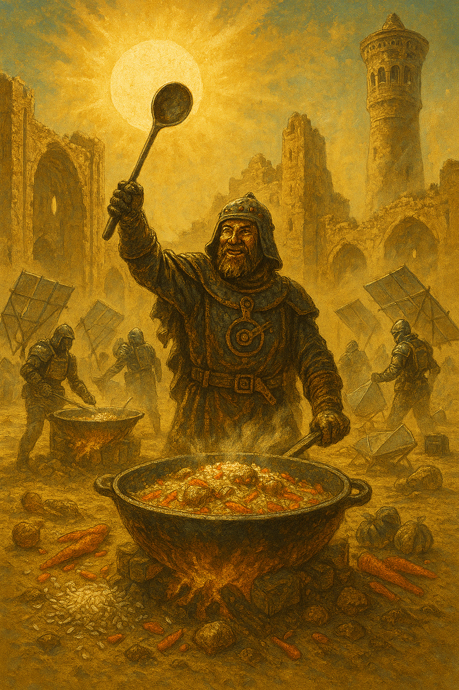
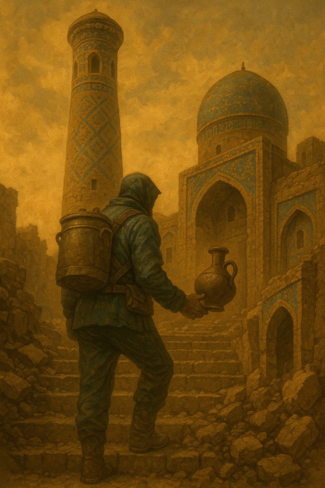
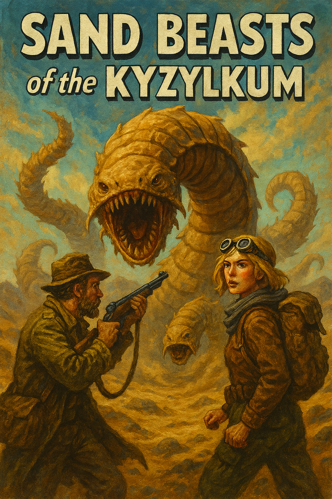
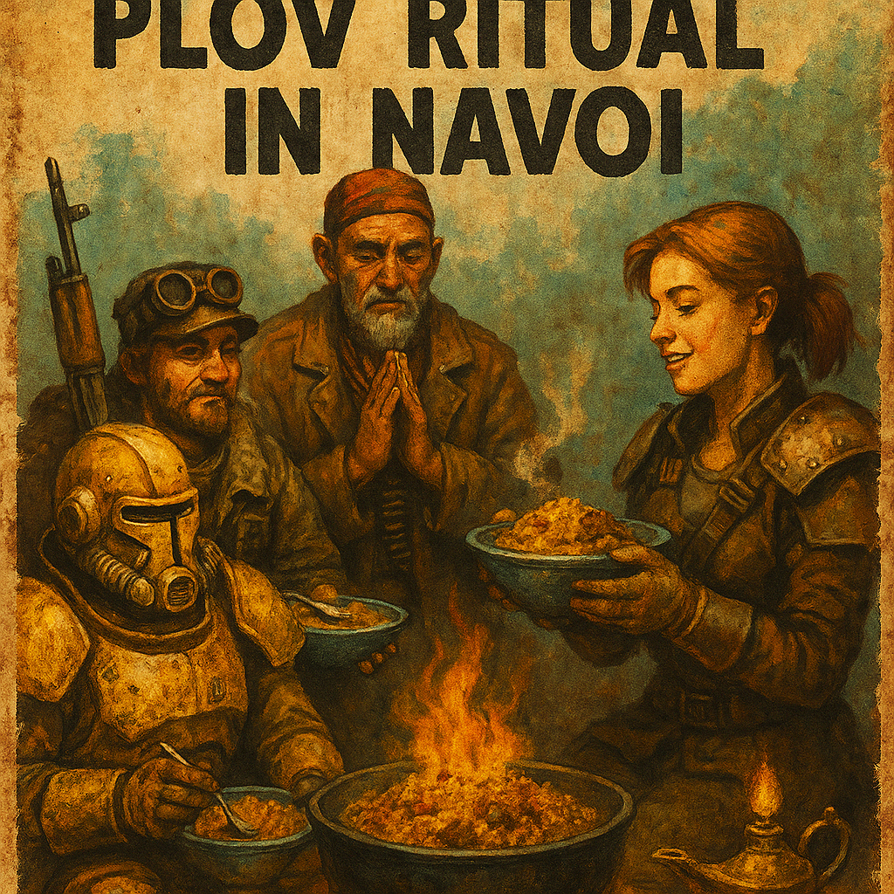

Fallout: Пловген
Интерактивный квест о Вкусе Единства
Год 2278. После Вкусовой Войны человечество разделилось на кланы. Сушисты, бургермены и веганы разорвали остатки единой кухни.
Но в одном из Убежищ сохранился рецепт. Легендарный Плов Единства.
Ты — Пловген, потомственный повар из Убежища №88.
Твоя миссия: пройти через пустоши, найти утерянные ингредиенты и воссоздать вкус, способный объединить всё человечество…

Начать
Ты выходишь из бункера Убежища №88. Перед тобой — разрушенные улицы Ташкента. Впереди туннель метро и дымящаяся чайхана.

Идти в туннель
Зайти в чайхану
Ты спускаешься в туннель. Там темно и сыро. Ты слышишь шаги и видишь блеск крышек. Это банда "Чили-Зирвак"!

Сразиться с ними ложкой
Спрятаться в вентиляции
Ты входишь в чайхану и встречаешь Зирыча. Он угощает шорпо и предлагает карту в обмен на специи.

Принять сделку и отправиться в Самарканд
Ты покидаешь Ташкент и добираешься до Регистана. Здесь живёт мутант Зирвакус, страж специи. Ты готов к испытанию вкуса.

Войти в купол и сразиться
Ты прячешься, но один из Зирваков замечает тебя. Начинается погоня. Ты вырываешься наружу и мчишься к Ургуту.

Продолжить путь
Ты проходишь через Ургут, Бухару и Хиву, собирая ингредиенты. В Навои тебя ждёт финальный казан.

Приготовить Плов Единства
Ты бросаешь специи в казан. Появляется свет. Кланы объединяются. Пловген спасает Пустошь…

Конец
Пройти ещё раз